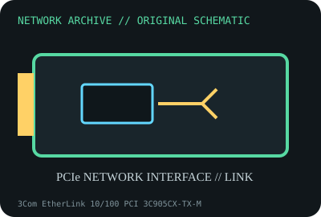

[ MODEL-SPECIFIC NETWORK HARDWARE ]
3Com EtherLink 10/100 PCI 3C905CX-TX-M
Legacy 32-bit PCI Fast Ethernet adapter with integrated management engine. Confirm exact product label and revision before applying specifications.

IDENTIFICATION: Confirm manufacturer PID, hardware revision, device ID or module suffix. Nominal standards/link rates are not measurements of payload performance.
Exact specifications and compatibility
| Dedicated subcategory | Legacy networking adapters |
|---|---|
| Exact product/model | 3Com EtherLink 10/100 PCI 3C905CX-TX-M |
| Bus, ports and physical interface | 32-bit PCI; single RJ-45 10/100BASE-TX; WOL/header details vary by board. |
| PHY, radio or protocol | 3Com 3C905CX controller family; 10/100BASE-TX IEEE 802.3/802.3u auto-negotiation. |
| Nominal rate (not measured) | 100Mb/s maximum nominal link (or 10Mb/s fallback), not tested application throughput. |
| Measured throughput | No measured benchmark is claimed for a physical specimen. A valid result must record host/peer, link partner, media/cable, driver/firmware, traffic pattern, test tool and duration. |
| Drivers, OS and firmware | 3Com EtherCD Windows/NetWare packages and Linux 3c59x driver support are historical; check device ID and OS release. |
| Compatibility | Requires legacy PCI slot and matching peer/cable; newer systems may lack PCI and signed legacy drivers. |
| Variant warning | CX-TX-M is a distinct model suffix from 3C905B-TX and 3C905C-TX-M, despite similar styling; do not reuse variant-specific assumptions. |
Model and revision notes
CX-TX-M is a distinct model suffix from 3C905B-TX and 3C905C-TX-M, despite similar styling; do not reuse variant-specific assumptions.
3Com EtherCD Windows/NetWare packages and Linux 3c59x driver support are historical; check device ID and OS release.
Requires legacy PCI slot and matching peer/cable; newer systems may lack PCI and signed legacy drivers.
Archival, ESD and preservation notes
Record suffix, controller marking, MAC, PCI ID and WOL parts. ESD-safe storage; do not apply power to damaged or corroded board.
Document source URL, access date, document revision and specimen label/condition. Preserve without credentials or private configuration.
Primary manufacturer and standards sources
- 3Com 3C905CX-TX-M user guide (manufacturer document mirror/archive)Primary manufacturer or standards documentation; verify exact SKU and host revision.
- Broadcom 3Com legacy support and driver searchPrimary manufacturer or standards documentation; verify exact SKU and host revision.
- IEEE 802.3u Fast Ethernet standardPrimary manufacturer or standards documentation; verify exact SKU and host revision.
Manufacturer statements cover the named part or its documented product family; the exact labeled revision and vendor compatibility list take precedence.